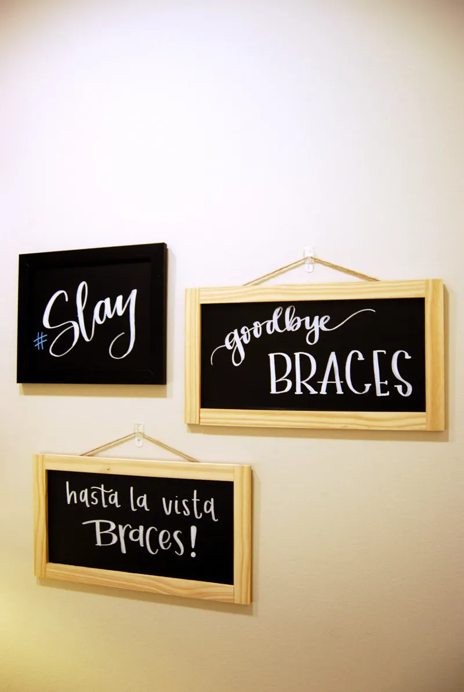
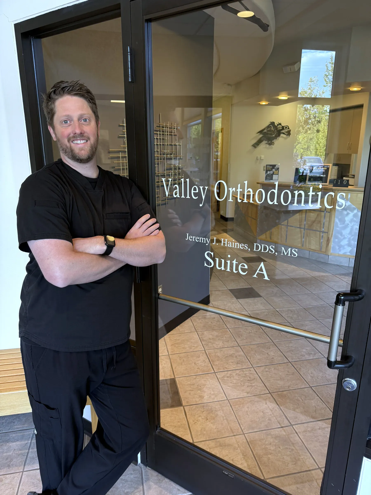
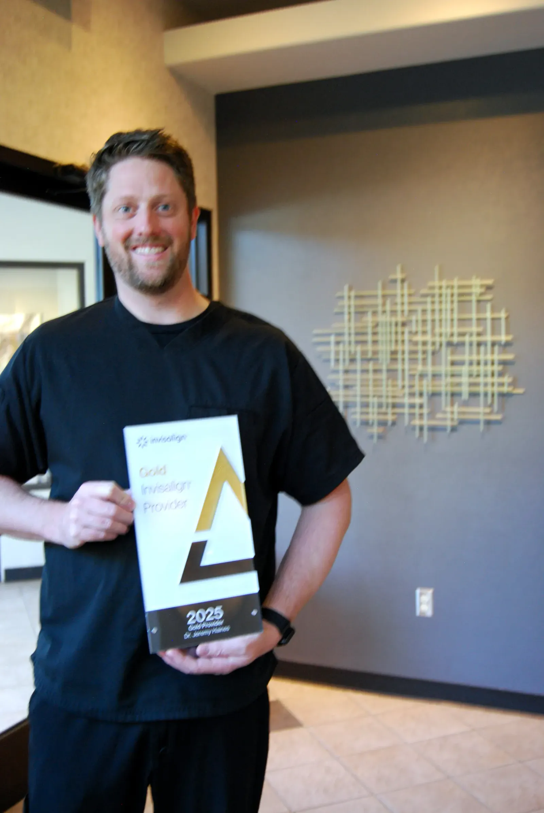
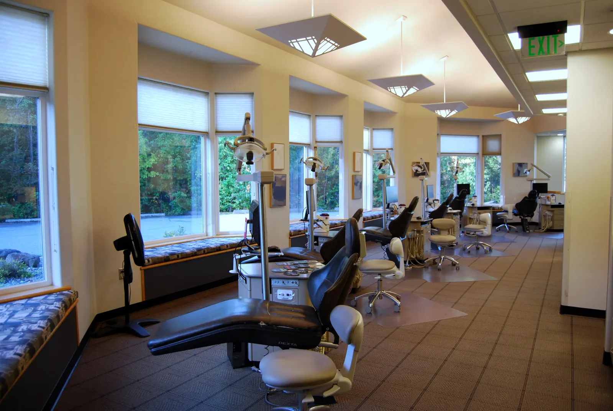
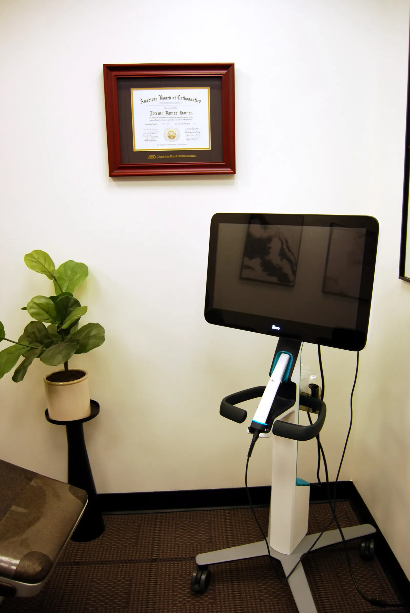
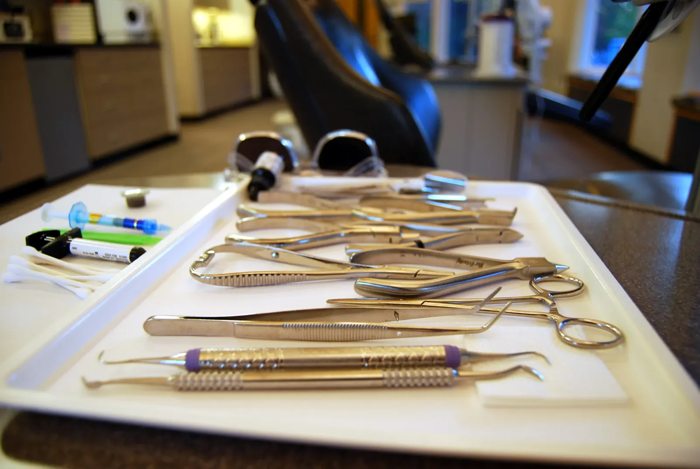
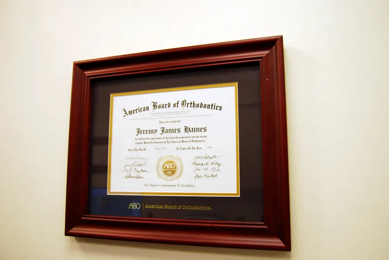
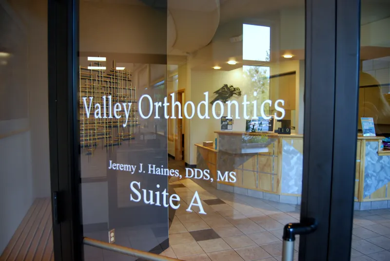

Braces
Metal and clear braces for kids, teens and adults, planned around the result you want. Still the most predictable way to fix a complicated bite.
Dr. Jeremy Haines is a board-certified orthodontist, and his is the only office in Wasilla that does nothing but orthodontics. The first visit is free, ends with a plan and a price, and families come from Palmer and across the Mat-Su Valley.
| Tuesday to Thursday | 7:30 AM to 4:30 PM |
|---|---|
| Summer, Tuesday to Thursday | 7:30 AM to 4:00 PM |
| Monday and Friday | Phones only7:30 AM to 4:30 PM |
| Saturday and Sunday | Closed |
Free consultation with TMJ analysis. Most treatment $5,000 to $6,500, from $125 a month interest-free.

Board-certified orthodontist
Dr. Jeremy Haines is a diplomate of the American Board of Orthodontics.
Wasilla's only orthodontics-only practice
No general dentistry here. Braces and Invisalign for kids, teens and adults.
20+ years in the Valley
A long-established Wasilla office, serving Palmer and the whole Mat-Su Valley.

Alaska grown, Loma Linda trained, and the kind of orthodontist who will tell you when your kid does not need braces yet.
Dr. Haines grew up in Alaska and trained at Loma Linda University, where he earned his dental degree and completed his orthodontic residency. He treats kids, teens and adults at an office that has been part of Wasilla for more than 20 years.

Valley Orthodontics is the only practice in Wasilla limited to orthodontics. No cleanings, no fillings, no waiting behind someone else's crown.
One specialist, one team, and more than 20 years in the same Wasilla office. Most of the staff have seen a whole family through braces, and they will tell you about the candy wall before you ask.
Meet the team
Appointments start at 7:30 AM Tuesday through Thursday, so most kids are back at school before first bell. Invisalign patients check in from home with remote monitoring between visits.
Families from Palmer and the rest of the Mat-Su usually fit a visit into a school morning and are done before the day starts. Coming from further out? Tell the front desk and they will stack appointments for siblings.
Coming from Palmer
The consultation is free and includes a TMJ analysis. You leave knowing what Dr. Haines recommends, how long it will take and what it costs. Most treatment runs $5,000 to $6,500, from $125 a month interest-free.
Nothing starts that day. Go home, talk it over, and call when you are ready. Most insurance plans with orthodontic benefits are accepted, and the front desk files the claim for you.
What to expect at your first visitBraces and Invisalign are most of what we do. Dr. Haines compares both with you at the free consultation.

Metal and clear braces for kids, teens and adults, planned around the result you want. Still the most predictable way to fix a complicated bite.

Clear aligners you take out to eat and brush, with remote monitoring so you drive to Wasilla less often. Dr. Haines will tell you honestly whether they suit your case.

A first check around age 7, while a child is still growing. Most kids need nothing yet, and we will say so. When early treatment helps, it can shorten what comes later.
Also hereSplint therapy for jaw pain and TMJSurgical orthodontics, with an oral surgeon partnerRetainer AssuranceTouch-up treatments


Member, American Association of OrthodontistsMember, American Dental AssociationMember, Pacific Coast Society of OrthodontistsMember, Alaska Dental Society
Lisa KaneGoogle reviewI took my child to 3 different places for an evaluation and we both liked Valley Ortho the best. The staff were all very kind at every visit. Also the braces were successful and took less time than expected. We are very pleased with the care we received and the end results!
Marc LarsonGoogle reviewI am an orthodontist and teach orthodontics at Loma Linda University. I have evaluated the orthodontic knowledge and talent of hundreds of orthodontists. Dr. Haines is absolutely top notch. You can't pick a better orthodontist...
Mickey VGoogle reviewI wait 50+ years to finally do something about my less than stellar smile. Dr. Haines and his wonderful staff were great. They treated me with love and respect. I really appreciate everything they did to help me obtain a smile that I can be proud to show off. Thank you Dr. Haines and staff.
Most treatment at Valley Orthodontics runs $5,000 to $6,500. Payments start from $125 a month on interest-free plans, with a down payment of $700 to $1,000. Your exact figure depends on your bite and how long treatment takes, so we go over it at your free consultation before you decide anything. Financing and insurance details.
Yes. The first visit is free and includes a TMJ analysis. Dr. Haines looks at your teeth and bite, takes digital scans, and talks through the options that fit you or your child. You leave with a plan and a price. Treatment starts at a later visit, once you have thought it over. What to expect at your first visit.
Age 7. By then the first adult molars are in and Dr. Haines can see how the jaw and bite are developing. Most kids that age do not need anything yet, and we will tell you so. When early treatment does make sense, it can shorten or simplify what comes later. About early intervention.
You do not have to choose before you come in. Dr. Haines offers both and will tell you honestly which suits your bite and your habits. Invisalign patients can use remote monitoring, which means fewer drives to Wasilla between visits. Complicated bites often still do best with braces, and plenty of cases could go either way.
We accept most insurance plans with orthodontic benefits, and our front desk files the claim for you. Bring your card to the free consultation and we will help you find out what your plan covers. If you do not have orthodontic coverage, the interest-free payment plans work the same way for everyone.
Yes. Our one office is at 1001 E. USA Circle in Wasilla, a short drive from Palmer, and families come from across the Mat-Su Valley. Appointments start at 7:30 AM Tuesday through Thursday, so many kids are seen before school. We also welcome transfer patients who started treatment somewhere else. Coming from Palmer.
Yes, and plenty of them. Dr. Haines treats adults with braces and Invisalign alongside kids and teens. Adult teeth tend to move a little more slowly, so plans often run longer, and we will give you a realistic timeline at your free consultation rather than a hopeful one. Some of our favorite results are adults who waited decades to start.
Call our Wasilla team and we will find a time that works. The first visit is free and includes a TMJ analysis.
(907) 376-1510| Tuesday to Thursday | 7:30 AM to 4:30 PM |
|---|---|
| Summer, Tuesday to Thursday | 7:30 AM to 4:00 PM |
| Monday and Friday | Phones only7:30 AM to 4:30 PM |
| Saturday and Sunday | Closed |
Some weeks we also see patients on Monday. Call to check.
In the Professional Center building. Look for the sign at the road.
Get directionsFree parking at the door. Palmer is a short drive east on the Parks Highway.